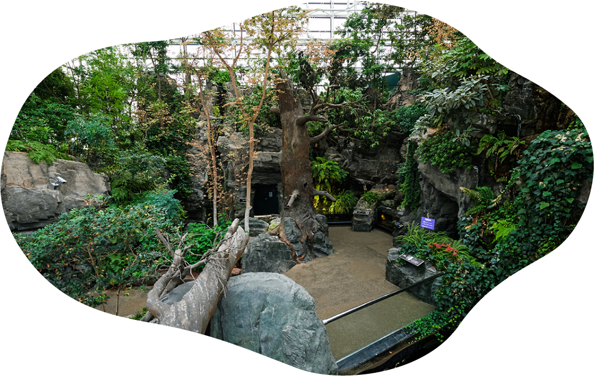

Japan Forest
Japan Forest
The sound of water in the waterfall echoing in the forest, the greenery of the moss that increases the wetness and vividness of the droplets, and the trees that change their expression every season. And the creatures that live by the waters of the mountain stream. If otters were still living in the Japan, this scene might have spread.
